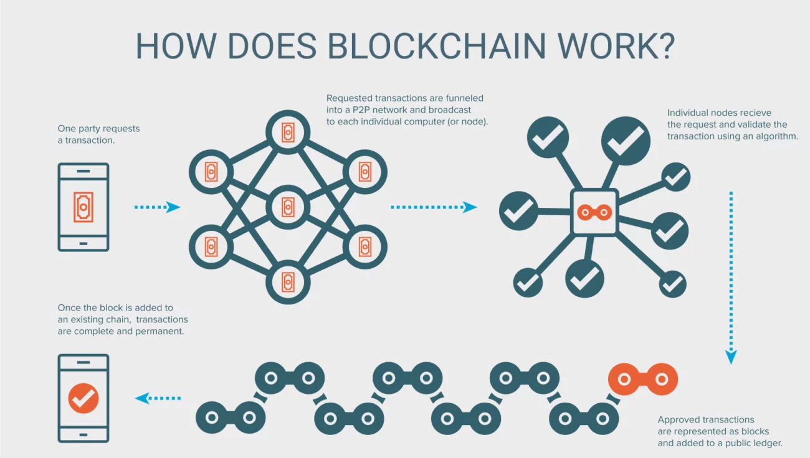

Définition : blockchain
Une (ou un) blockchain, ou chaîne de blocs est une technologie de stockage et de transmission d'informations sans organe de contrôle.
Techniquement, il s'agit d'une base de données distribuée dont les informations envoyées par les utilisateurs et les liens internes à la base sont vérifiés et groupés à intervalles de temps réguliers en blocs, l'ensemble étant sécurisé par cryptographie, et formant ainsi une chaîne.
Par extension, une chaîne de blocs est une base de données distribuée qui gère une liste d'enregistrements protégés contre la falsification ou la modification par les nœuds de stockage.

Une blockchain est donc un registre distribué et sécurisé de toutes les transactions effectuées depuis le démarrage du système réparti.
Il existe des blockchains publiques, ouvertes à tous, et des blockchains privées, dont l’accès et l’utilisation sont limitées à un certain nombre d’acteurs.
Une blockchain publique peut donc être assimilée à un grand livre comptable public, anonyme et infalsifiable.
Comme l’écrit le mathématicien Jean-Paul Delahaye, il faut s’imaginer « un très grand cahier, que tout le monde peut lire librement et gratuitement, sur lequel tout le monde peut écrire, mais qui est impossible à effacer et indestructible. »
